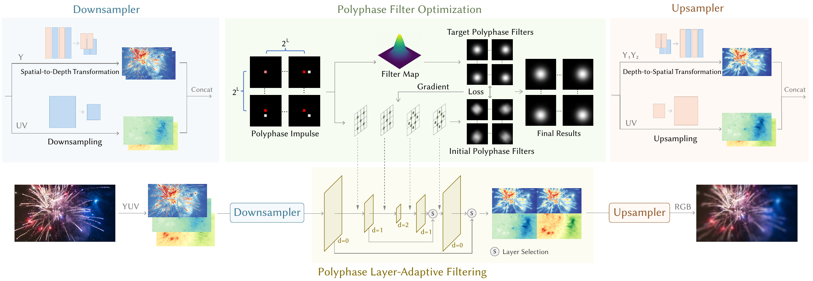
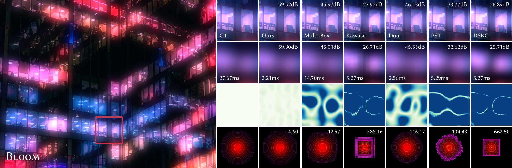
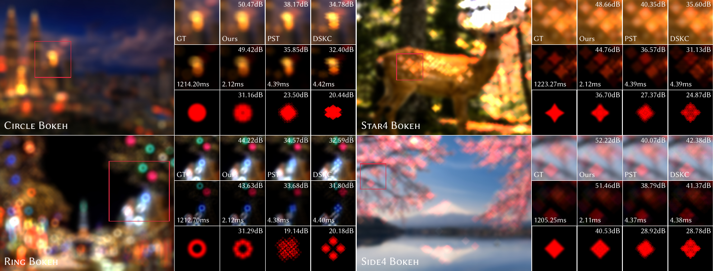
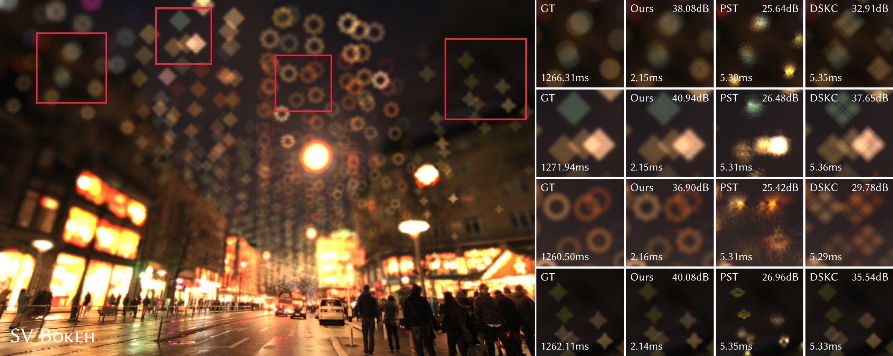
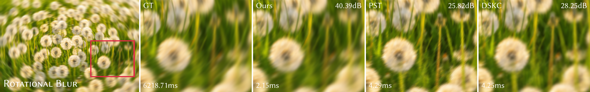
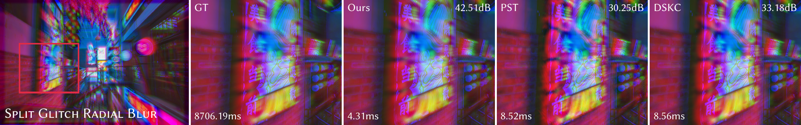
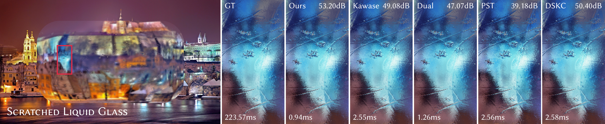

We proposed an approach for rapid large-kernel spatially varying filtering via our Differentiable Polyphase Filtering pipeline. We compare our method with optimization-based sparse baselines (PST, DSKC). For anisotropic rotational motion blur and spatially varying ring-shaped bokeh filters, our approach achieves approximately 3000x and 600x speedups over dense kernel convolution, respectively, and is about 2x faster than the state of the art.
Abstract
Large-kernel filtering is a fundamental operation in image post-processing and video effects. While decomposing large kernels into multiple sparse ones is a proven strategy for acceleration on parallel architectures, existing optimization-based approximation methods are constrained to fixed-resolution processing. In this paper, we propose a novel framework based on Polyphase Filtering, which enables the differentiable optimization of sparse kernels across varying resolutions. This approach achieves the fastest approximation to date for large kernels and remains highly effective even for spatially-variant dense kernels. To further enhance efficiency, we introduce Spatial-to-Depth Transformation and Asymmetric Intensity-Decoupled Transformation. Furthermore, to address scenarios with spatially varying kernel sizes, we employ a Layer-Adaptive Filtering strategy that integrates kernels from multiple levels for rapid filtering. Extensive experiments demonstrate that our method significantly outperforms existing state-of-the-art techniques in both computational performance and visual quality.
Pipeline

An illustration of our Differentiable Polyphase Filtering pipeline. In the Polyphase Filter Optimization, we optimize the parameters of the Polyphase Filter with poly impulses and target kernel shifts to ensure pixel results in polyphase. Downsampler and Upsampler consist of Spatial-to-Depth Transformation and Asymmetric Intensity-Decoupled Sampler compact pixels into Polyphase Filtering. Polyphase Filtering uses the optimized parameters of sparse kernels at multiple resolutions. Layer-Adaptive Filtering Layer in Polyphase Filtering selects layers to preserve details for small kernels.
Results

Visual comparison of bloom rendering. We compare our method against traditional Gaussian approximations (Multi-Box, Kawase, Dual Filtering) and optimization-based sparse baselines (PST, DSKC). The rows display, from top to bottom: final composited bloom results; filtered highlights annotated with runtime latency in ms; error maps relative to the ground truth, where deeper blue indicates larger error; and kernel approximation visualizations with iso-contours, labeled with the Covariance Frobenius Norm to quantify the kernel diffusion distribution.

Visual comparison of bokeh rendering. We compare our method against optimization-based sparse baselines (PST, DSKC). The rows display, from top to bottom: final composited bokeh results; filtered highlights annotated with runtime latency in ms; and kernel approximation visualizations, labeled with PSNR to measure kernel structure and details.

Visual comparison of spatially varying bokeh rendering. We compare our method against optimization-based sparse baselines (PST, DSKC). Each result is labeled with its corresponding PSNR and runtime latency in ms.

Visual comparison of rotational blur. We compare our method against optimization-based sparse baselines (PST, DSKC).

Visual comparison of radial blur. We compare our method against optimization-based sparse baselines (PST, DSKC).

Visual comparison of spatially varying Gaussian blur. We compare our method against optimization-based sparse baselines (PST, DSKC).